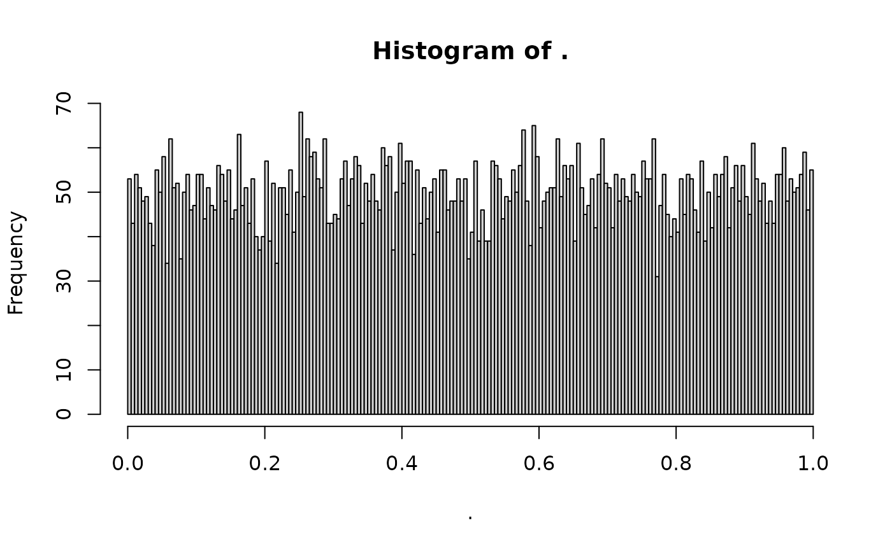

Provided a distribution of risk in a population, this function calculates the exact AUC of a model that produces the risk estimates. For example, a logistic regression model built with a normal linear predictor yields logit-normal distributed predicted risks. The AUC from the logistic regression model is the same as the AUC estimated from the distribution of the predicted risks, independent of the outcome. This method for AUC calculation is useful for simulation studies where the predicted risks are a mixture of two distributions. The exact prevalence of the outcome can easily be calculated, along with the exact AUC of the model.
auc_density(density, cut.points = seq(from = 0, to = 1, by = 0.001), ...)
auc_histogram(x)a function name that describes the continuous probability density function of the risk from 0 to 1.
sequence of points in [0, 1] where the sensitivity and specificity are calculated. More points lead to a more precise estimate of the AUC. Default is seq(from = 0, to = 1,by = 0.001).
arguments for the function specified in density. For example, dbeta(x, shape1=1, shape2=1) has need for two additional arguments to specify the density function (shape1 and shape2).
histogram object from graphics::hist
Returns a list sensitivity and specificity at each cut point, the expected value or mean risk, and the AUC associated with the distribution.
auc_density(density = dbeta, shape1 = 1, shape2 = 1)
#> $details
#> # A tibble: 1,001 × 3
#> threshold sensitivity specificity
#> <dbl> <dbl> <dbl>
#> 1 0 1 0
#> 2 0.001 1.00 0.00200
#> 3 0.002 1.00 0.00400
#> 4 0.003 1.00 0.00599
#> 5 0.004 1.00 0.00798
#> 6 0.005 1.00 0.00998
#> 7 0.006 1.00 0.0120
#> 8 0.007 1.00 0.0140
#> 9 0.008 1.00 0.0159
#> 10 0.009 1.00 0.0179
#> # ℹ 991 more rows
#>
#> $mu
#> [1] 0.5
#>
#> $auc
#> [1] 0.833333
#>
runif(10000) %>%
hist(breaks = 250) %>%
auc_histogram()

#> [1] 0.8272792